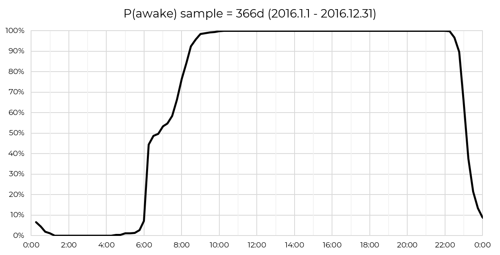
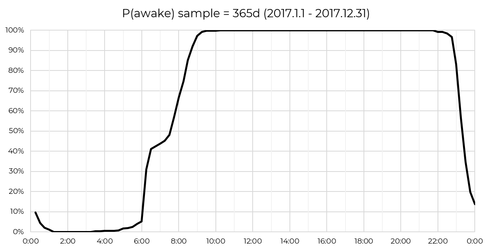
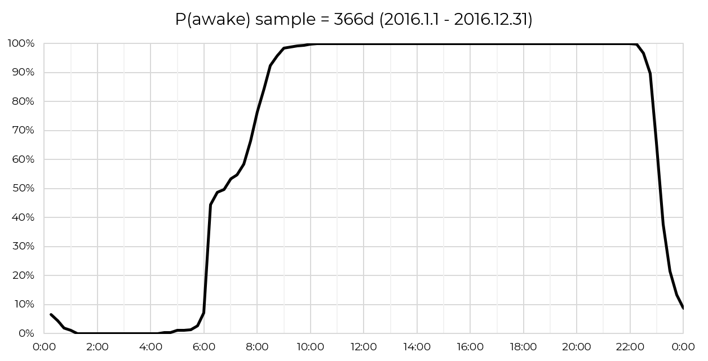
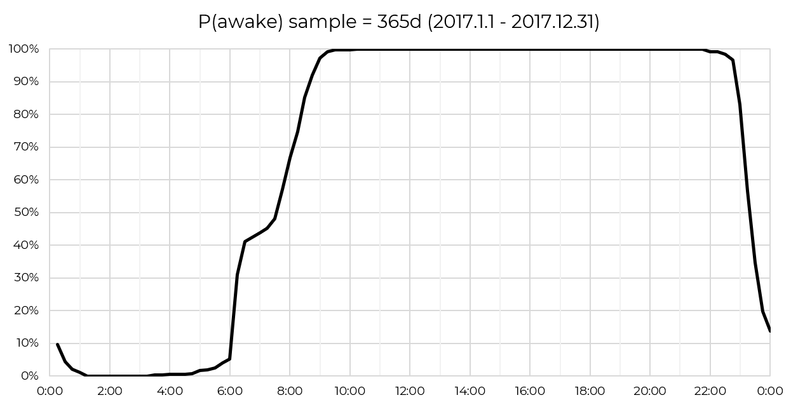
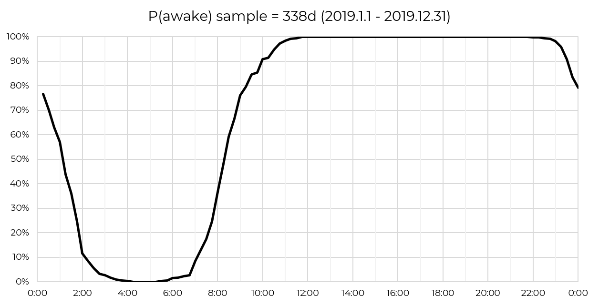
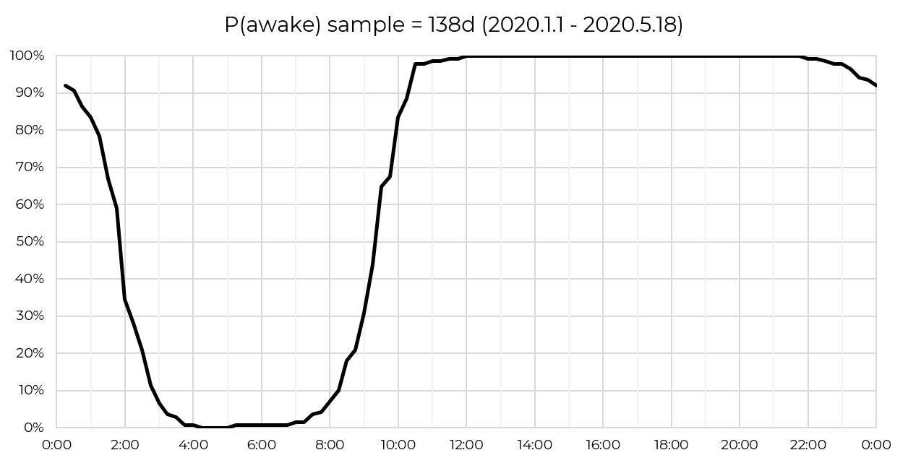
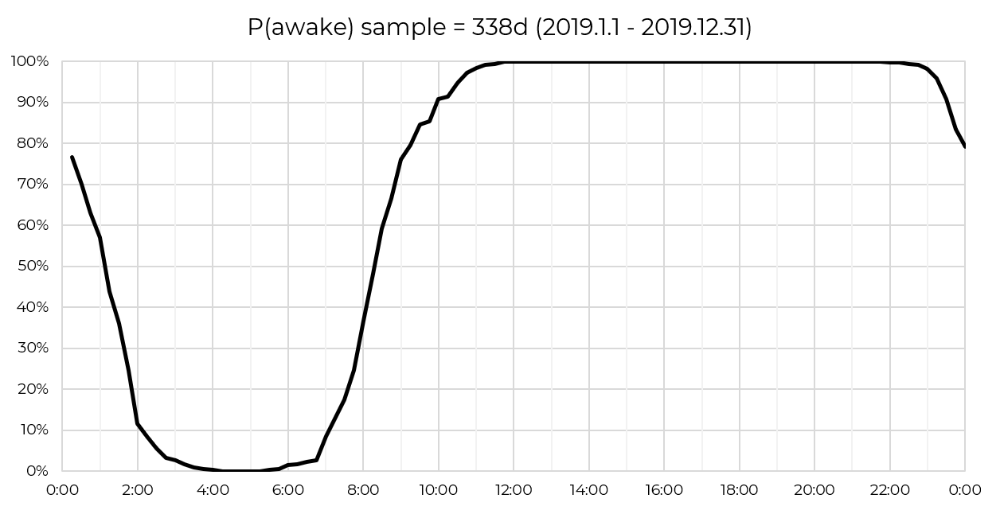
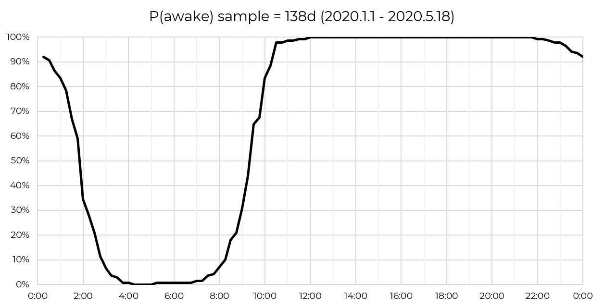
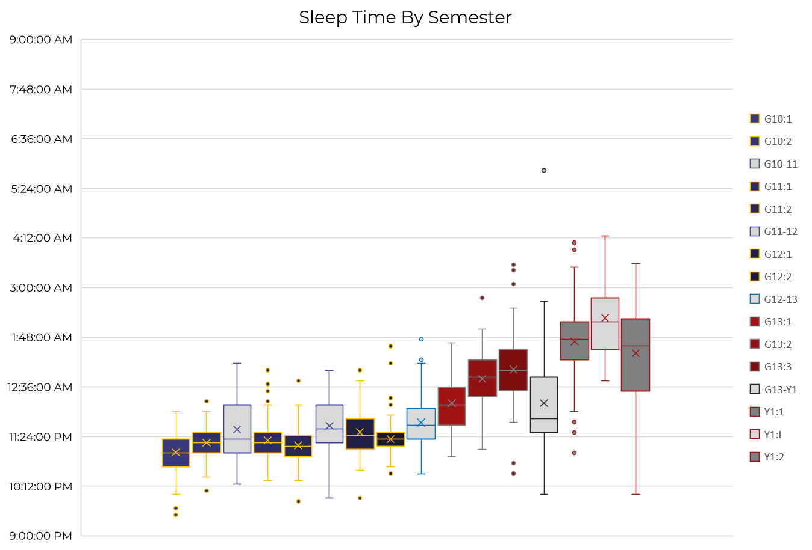

a.k.a. my sleep has become worse
This has been a very long project of mine. On a fine day in May 2015, I thought to myself, "hey I'm starting senior high, I should take up a new challenge!" That challenge was to record the time I go to sleep for the night and wake up for the day. This has continued to this day, with some hiatuses. Nonetheless, it's been thousands of days, and you know what's nice about having thousands of rows? You can analyze it! Since the project started in Excel (bad choice, I know, but I was 15), I can only do so much. I'll try to bring it out of Excel soon.
The animation you see above shows the probability of myself being awake at any given time of day, each frame depicting a year from 2015 to 2020. The first three years has a strange squiggle for when I wake up, and that's because I wake up by the alarm for the weekday and sleep in for the weekend (though the ratio is not necessarily 5:2 due to... reasons). Yes, school started at 8, everyone needed to come down from the dorms at 7, so I woke up around half an hour to an hour before that. I take pride in being the first (sometimes the second) person to go to sleep among the four roommates.
As you can see in 2018 through 2020, that has changed. In the 2018-2019 school year, which I've moved to the United States, school starts at 8 or 9, so things shift accordingly. At MIT, school starts at 9 or 10 or later, and either psets got me or I stay up with my friends for crackhead hours. It also seems that my sleep schedule has been less precise.
Here's each of them on its own:
 



 



Now I also wonder how many hours I get to sleep each night, and if the sleep cycle theory proves to be true. I personally believe the sleep cycle theory, but it's almost always not the case that I sleep in multiples of 90 minutes due to my alarm clock. Let's see the histogram, divided into 15 minute length intervals:

I guess the two lumps can be explained as the "I need to wake up for school" lump and the "welp I'm not setting an alarm clock" lump. Overall though, I sleep for a pretty healthy amount!
I also made two box-and-whiskers graphs, one for my sleep time and the other for my wake time, as if it's not already clear that my sleep schedule has been deteriorating over the years. I used a loose definition for each semester, where Thai semesters are [May,September] and [October,February], the Exeter semesters are [September,November], [December,February] and [March,May], and the semesters at MIT are [September,December] and [February,May]. The months not pertaining to any of will be their own, as breaks between grades, as well as the IAP period. Enjoy. A mildly infuriating note: I can't make the time axes be in sensible times for some reason.
Right, so this is not much of a shocker, it just becomes more detailed and it looks a bit more beautiful than just a sine-like line graph. I used to be pretty precise about my sleep time back in senior high. As you can see the sleep time during summer breaks tend to be pretty wide in range and for the most part in roughly the same intervals. Exeter made my sleep time drift by like an hour for some reason. The reason is probably academics, as the US history paper in the third term really had an influence and the later terms had generally more challenging courses. Another reason might be because I have a single room, which might have contributed to me being lax on myself and letting the sleep schedule drift by itself. It snapped back when I came back home for the summer, before snapping right back in my freshman fall, going even further. The people there generally sleep late, I can't help with that either. During IAP I didn't go home and I took some intensive classes like web.lab too, which is why I slept so late. Freshman spring has a very wide range, since I was sent back home in the middle of the term and my sleep schedule sprung back into my pre-college schedule. It didn't last long though, because once classes resumed my sleep became a wreck again. That far outlier during the summer before college was during a trip with my friends, we had a party and managed to talk until sunrise.

Wake time is interestingly more varied than sleep time in general, and is especially more varied during senior high (again, weekdays vs. weekends) and surprisingly less varied since I came to the US. I guess it is a side effect of having later classes - weekdays and weekends don't distinguish themselves by wake time anymore. One interesting thing to look at is the latest term - the range is pretty narrow. That one outlier is the day after I and talkon spent so many hours trying to figure out how to wire up a phototransistor to an Arduino board for a design exercise in 6.08. The end product was pretty cool and I might link to that later.
Other things I analyzed were sleep duration by weekdays, by month and whatever have it. I sleep the least on Thursday nights.
I think that's a wrap! This is to date the biggest and most personal data science "project" I've done and it will only continue to grow. I loved this so much I even put it in my MIT admission essays.